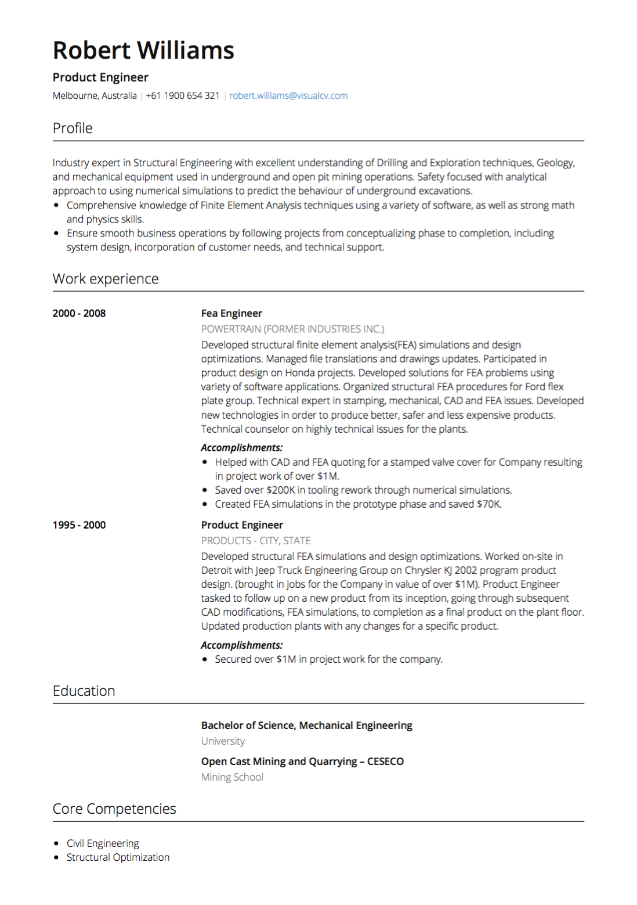

Australie CV
Conseils et conditions
Vous cherchez un emploi en Australie? Ce guide contient les astuces, exemples et conditions nécessaires pour rédiger le CV espagnol parfait. Créez votre CV aujourd'hui!

Vous cherchez un emploi en Australie? Ce guide contient les astuces, exemples et conditions nécessaires pour rédiger le CV espagnol parfait. Créez votre CV aujourd'hui!
Comme dans la plupart des pays, l'Australie possède sa propre culture de travail spécifique et ses attentes en matière de CV. Lors de la demande d'un emploi en Australie, il est important de veiller à ce que votre CV respecte les exigences de CV australiennes et soit conçu pour impressionner les recruteurs et les employeurs australiens.

Australie Durée du CV: Pour les professionnels expérimentés, un curriculum vitae de trois ou quatre pages est attendu en Australie. Si vous êtes récemment diplômé ou nouveau sur le marché du travail, deux pages sont suffisantes, mais dès que vos antécédents de travail sont assez robustes pour trois à quatre pages, votre CV devrait se développer en conséquence.
Australie CV Terminologie: les termes «CV» et «CV» sont utilisés de manière synonyme en Australie - ils se réfèrent au même document. Le mot «CV» est utilisé plus communément, cependant, alors, en cas de doute, utilisez celui-ci.
Australie Langue de CV: Lors de l'écriture de votre CV, n'oubliez pas d'utiliser l'anglais australien correct - n'oubliez pas les extra u’s, comme dans ‘couleur’ et ‘travail’ (par opposition à l'orthographe américaine ‘couleur’ et ‘travail’).
Australie CV Photo: En règle générale, il est préférable de ne pas inclure une photo dans votre CV australien. Si vous souhaitez organiser votre CV en ligne, ou si vous êtes dans une industrie créative où les visuels sont très valorisés, une image peut être un atout. Assurez-vous de faire votre recherche, cependant - si la société que vous postulez ne s'attend pas à une photo, cela peut nuire à vos chances. Comme l'a déclaré le conseiller en recrutement de RH et de recrutement, Karalyn Brown , “Lorsque vous mettez votre photo sur votre CV, vous invitez un recruteur avec son propre ensemble de préjugés, afin de considérer votre apparence avec ce que vous avez peut-être atteint”.
Australie Informations personnelles du CV: Les informations personnelles requises pour un CV australien sont vos coordonnées - votre nom, adresse, numéro de téléphone, numéro de téléphone et adresse électronique (qui devrait être une variante de votre nom - conservez-le professionnel: firstname.lastname @ Example.com ou quelque chose de similaire). Toute autre information personnelle telle que l'âge, l'état matrimonial et le nombre d'enfants n'est pas pertinente pour votre expérience ou votre rendement professionnel et ne doit pas être incluse.
Australie CV Objectif: Il est recommandé, mais pas obligatoire, d'inclure un objectif de carrière au sommet de votre CV. Cela peut également être appelé un profil de carrière ou un résumé . Votre objectif est une courte introduction à vous et à votre CV et devrait donner au gestionnaire de l'embauche une raison pour continuer à lire. Selon Karalyn Brown , «Un CV sans objectif de carrière est comme un film sans titre ou une remorque.» Votre objectif devrait être bref - trois à cinq lignes - et devrait donner une description très claire de l'expérience que vous apportez Le poste et quels sont vos objectifs et vos ambitions pour le rôle que vous postulez.
Australie CV Expérience de travail: Affichez votre expérience de travail dans un ordre chronologique inversé , avec votre position la plus récente au sommet. Chaque entrée devrait inclure la date de début et de fin de votre mandat, et assurez-vous de tenir compte des lacunes dans votre emploi. Donnez des détails sur votre expérience de travail , y compris vos responsabilités et vos réalisations dans chaque rôle. Utiliser des informations quantifiables dans la mesure du possible et utiliser des verbes puissants comme «livrés», «formés» et «promus».
Éducation CV australienne: énumérez vos diplômes et diplômes pertinents dans un ordre chronologique inverse , y compris les dates. Incluez le nom de l'établissement, votre majeur, votre mineur et votre spécialisation, ainsi que les récompenses importantes que vous avez reçues.
Si vous avez des informations que vous souhaitez afficher qui ne sont pas couvertes par les sections ci-dessus, vous pouvez les inclure dans une section distincte de votre CV. D'autres sections incluent:
Compétences: Il est fréquent d'inclure une liste simple de compétences distinctes de votre historique de travail. Il s'agit de fournir un aperçu rapide, un coup d'oeil sur ce que vous exceller, sans approfondir votre expérience trop.
Expérience bénévole: l' expérience de bénévolat doit être notée sur votre CV. Si vous préférez, vous pouvez inclure une expérience de bénévolat dans votre section Histoire du travail, mais n'oubliez pas de noter quand un rôle est un poste de bénévoles. Langues: si vous maîtrisez plusieurs langues, notons qu'elles peuvent être un atout.
Références: Une simple note «Références disponibles sur demande» fera ici. Il n'est pas nécessaire de fournir des références jusqu'à la demande d'un employeur ou d'un recruteur.
Un CV bien écrit et correctement formaté fait partie intégrante de votre recherche d'emploi. Lors de la demande de postes en Australie, il est important de personnaliser votre CV pour répondre aux exigences et aux attentes du CV australien. Ne laissez pas un CV pauvre entre vous et une bonne carrière en Australie!